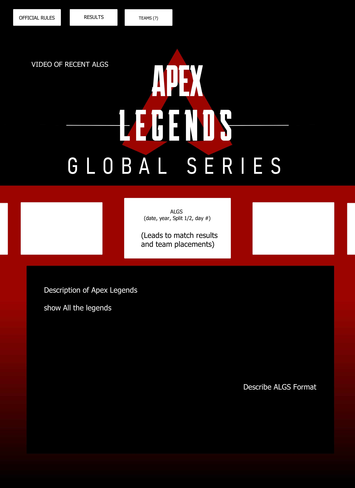
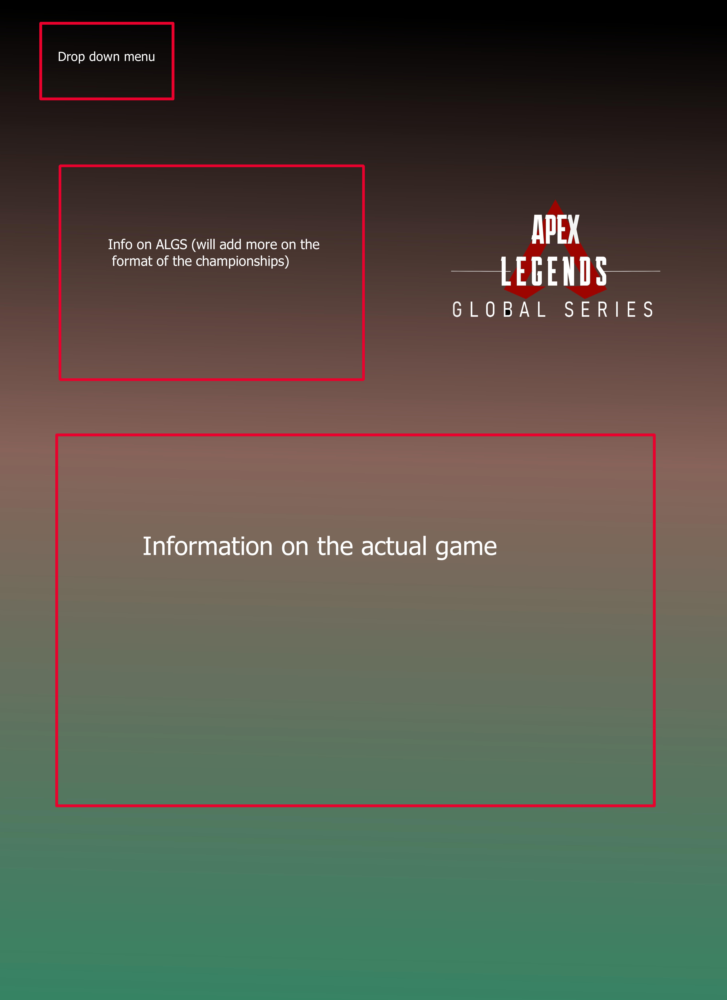
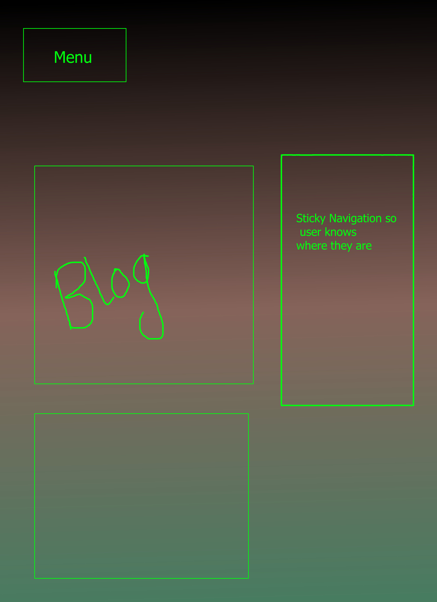
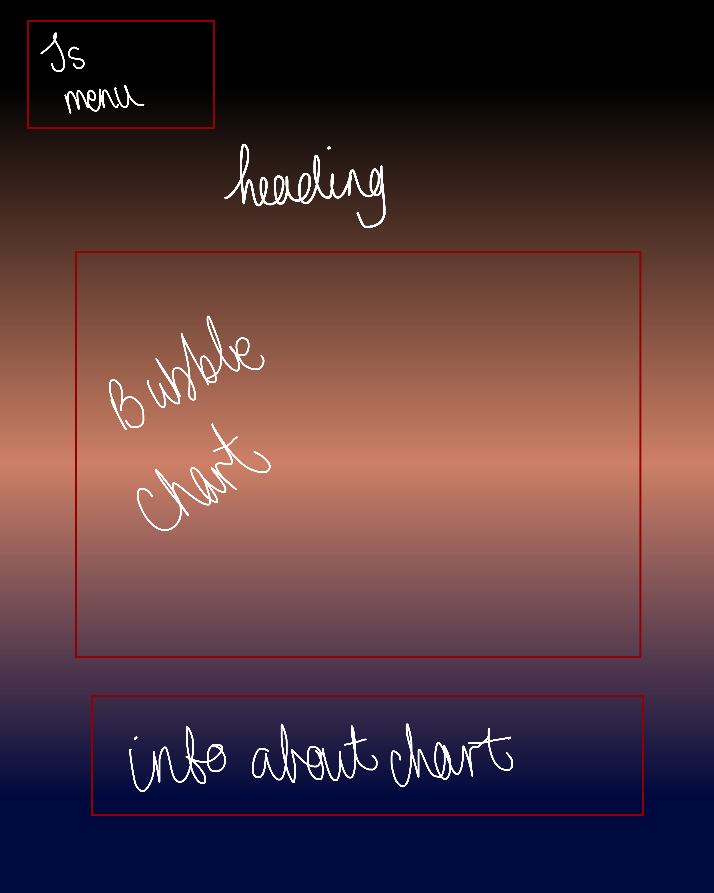
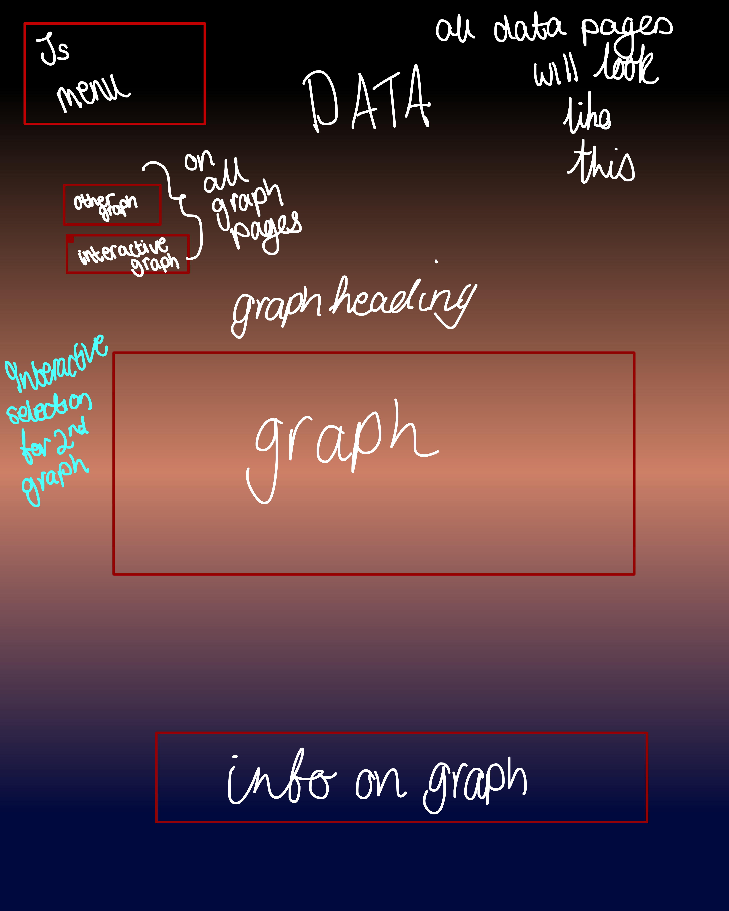
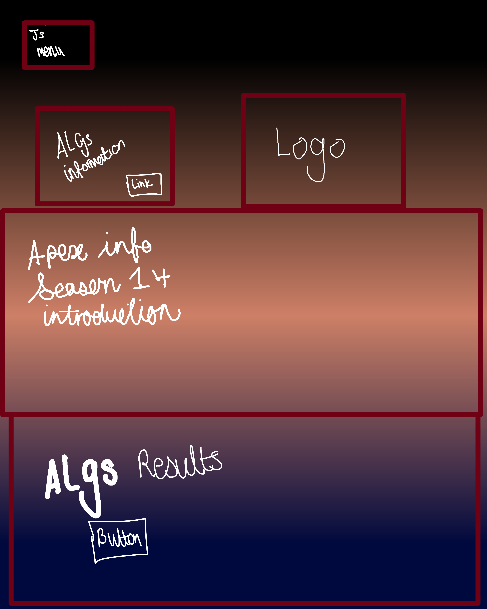
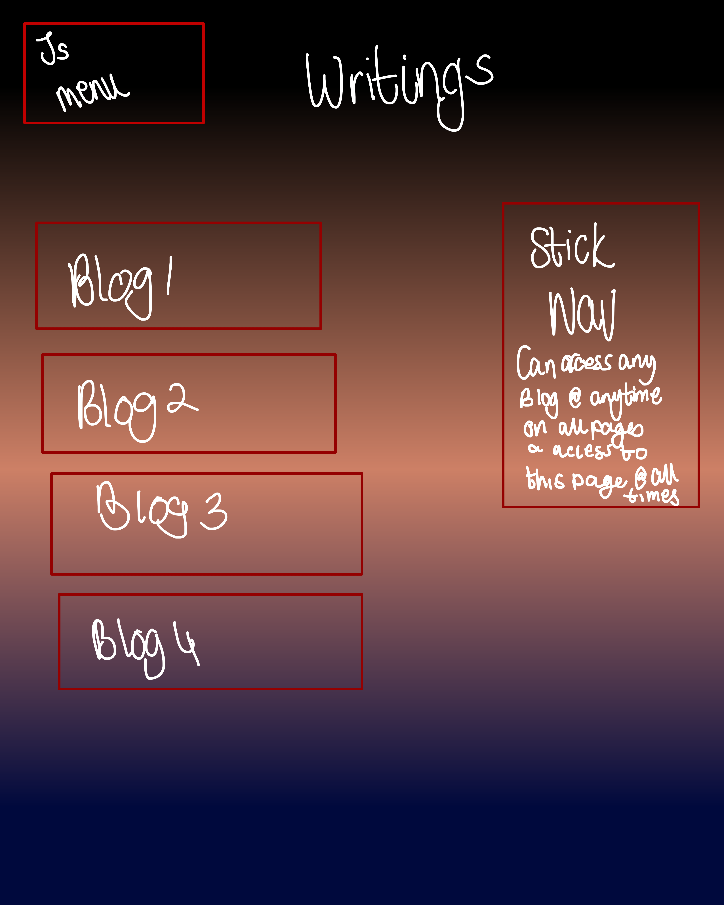
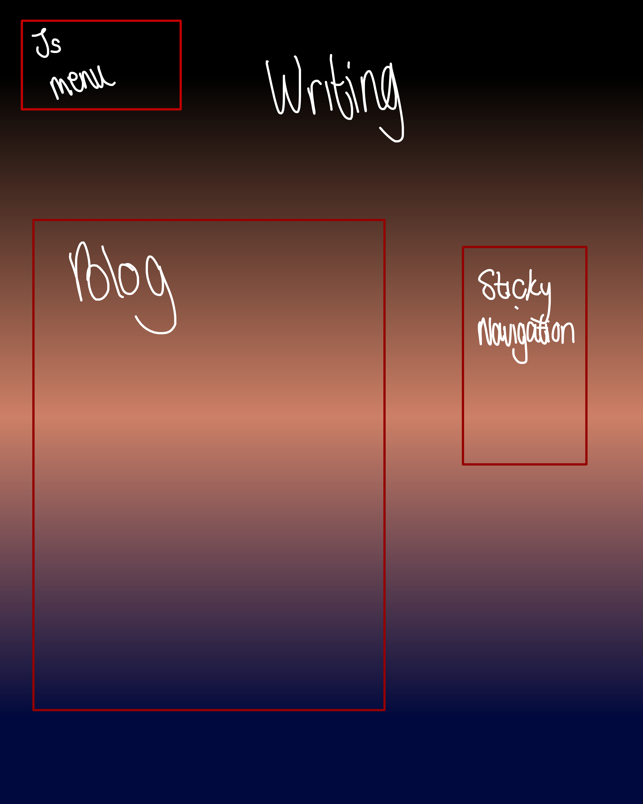
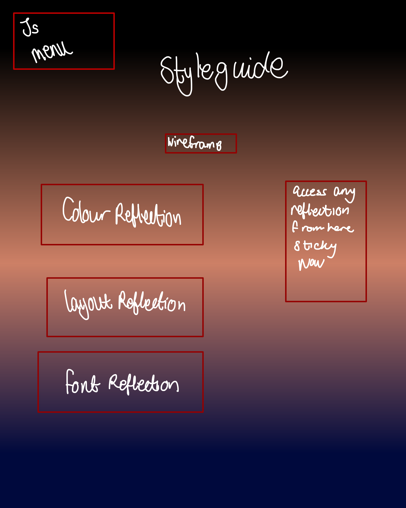

Data Vis

(Old StyleGuide plan) The colours of red, black, white, and sometimes grey because these are the colours of Apex Legends. I am thinking of changing some of the pages too match the season 14 colour scheme which is blues and greens (The image from the homepage)
homepage
New homepage
New Blog page
Data Vis
New data Vis

Data Art place holder

New Data Art place holder

Initially, the colour scheme was black and red but I changed it to the Season 14 colours as planned as red and black become harder to work with in terms of creativity and readability. The users have a more obvious menu, there is consistent navigation because of this on every page the drop-down menu exists. To refine the navigation I plan on adding another dropdown menu to the data visualisation page as I struggled with placing two graphs on one page. The blog’s page has been refined for easier readability by changing the font size. The home page will have more information and I plan on adding sections that describe the other pages so users know what they're going to be looking at. The blogs page has a sticky navigation I wont remove because it makes nagivating the page easier, think I will be adding this to the index page for when the other sections are introduced.
I added in some background pieces that are reminiscent of Apex website as well as adding in a section at the bottom of the page to remove empty space. I want to darken the bottom of the page so that it looks like the 'portals' and "The Singularity" from Apex so that the bottom of the page looks something like a black hole. The page with the API did not work out well and the information wasn't showing, I do think I finally figured out what went wrong but can't seem to fix it entierly. This will just have to be a place holder for the API until I figure it out. This is why I seperated the required interactivity and the API graph. The interactive graph is slightly different in terms of aestehtics and is something im deciding on whether or not to add to the rest of the pages.
I want the graph on the ALGS result page to be a stacked bar graph so that users can see all the points at once from different matches lay over eachother and display the teams they wish to see however I couldn't get the graph to work the way I wanted and decided to change it to this current graph with a little interactivity
New Data Art
New Data
New Homepage
New blog page
New blog page part 2
New Styleguide
The reasoning for the colours stems from the Apex Legends aesthetic all round. The red, black and white colours are from the base game and the extra colours stem from the season colours. Initially I had used a light lime-ish green for the decorative colour however I changed it to a dark blue because not only does it match the apex aesthetic much more because of the lore and characters. Not only do these colours make it easier on the users’ eyes it also looks more appealing than the green. The flow of the website has been changed to hopefully make sense. The Data Art section has two inteactive features where the user can see who they are hovering over as well as filter out certain demographic. The data page was slightly changed to have the ALGs results to be added to that section as they are all static graphs and one has interaction.The blog page has been revamped because the feedback indicated that the blogs are difficult to read therefore a single page is dedicatde to each blog so that they can be easily formated to be easy to read. As they are all different lengths. Each page can access the other, every blog page can access the original page as well as the other pages through sticky navigation. The responsiveness of the website is slightly better now. The next step is to focus on consistent java navigation. The data art, although I understand data art to be art created through the data, the examples provided showed the example showed in my critical reflection of my data art and therefore used that as inspiration.
As you can see there is very little update in terms of wireframes as this is the end desired look and therefore hasn't changed but the website has changed to represent these wireframes, specifically the main blogs Page